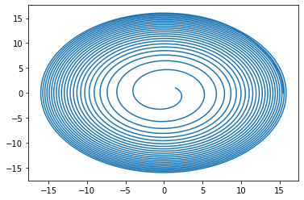
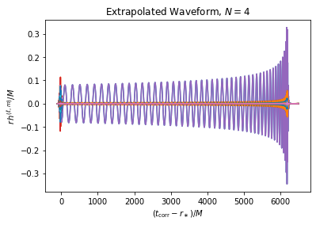
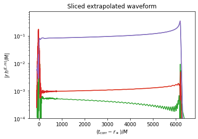
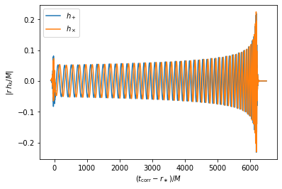

[1]:
import sxs
num = '0254'
catalog = sxs.load("catalog")
dataframe = catalog.table
dataframe[dataframe.index == 'SXS:BBH:'+str(num)][["reference_mass_ratio", "reference_chi_eff", "reference_eccentricity", "initial_separation", 'initial_dimensionless_spin1', 'initial_dimensionless_spin2', "reference_time"]]
[1]:
| reference_mass_ratio | reference_chi_eff | reference_eccentricity | initial_separation | initial_dimensionless_spin1 | initial_dimensionless_spin2 | reference_time | |
|---|---|---|---|---|---|---|---|
| SXS:BBH:0254 | 1.999955 | 0.200042 | 0.000052 | 15.5 | [2.99540000001e-12, -1.40087e-11, 0.600000003399] | [-1.196e-13, -6.59e-14, -0.599999995399] | 390.0 |
[2]:
import matplotlib.pyplot as plt
horizons = sxs.load("SXS:BBH:"+str(num)+"/Lev/Horizons.h5")
x = horizons.A.coord_center_inertial[:,0] - horizons.B.coord_center_inertial[:,0]
y = horizons.A.coord_center_inertial[:,1] - horizons.B.coord_center_inertial[:,1]
plt.plot(x,y)
Found the following files to load from the SXS catalog:
SXS:BBH:0254v5/Lev5/Horizons.h5
Downloading to /Users/liuyu/.sxs/cache/SXS:BBH:0254v1/Lev5/Horizons.h5:
[2]:
[<matplotlib.lines.Line2D at 0x146ea8790>]

[3]:
import matplotlib.pyplot as plt
extrapolation_order = 4
waveform = sxs.load("SXS:BBH:"+str(num)+"/Lev/rhOverM", extrapolation_order=extrapolation_order)
plt.plot(waveform.t, waveform.data.real)
plt.title(f"Extrapolated Waveform, $N={extrapolation_order}$")
plt.xlabel(r"$(t_{\mathrm{corr}} - r_\ast)/M$")
plt.ylabel(r"$r\, h^{(\ell,m)}/M$")
Found the following files to load from the SXS catalog:
SXS:BBH:0254v5/Lev5/rhOverM_Asymptotic_GeometricUnits_CoM.h5
Downloading to /Users/liuyu/.sxs/cache/SXS:BBH:0254v2/Lev5/rhOverM_Asymptotic_GeometricUnits_CoM.h5:
[3]:
Text(0, 0.5, '$r\\, h^{(\\ell,m)}/M$')

[4]:
w_ell2 = waveform[:, :5]
plt.semilogy(w_ell2.t, w_ell2.abs)
plt.ylim(bottom=1e-4)
plt.title(f"Sliced extrapolated waveform")
plt.xlabel(r"$(t_{\mathrm{corr}} - r_\ast)/M$")
plt.ylabel(r"$\left| r\, h^{(\ell,m)}/M \right|$");

[5]:
θ, ϕ = 0.1, 0.2
s = waveform.evaluate(θ, ϕ)
plt.plot(s.t, s.real, label=r"$h_+$")
plt.plot(s.t, -s.imag, label=r"$h_\times$")
plt.xlabel(r"$(t_{\mathrm{corr}} - r_\ast)/M$")
plt.ylabel(r"$\left| r\, h_k/M \right|$")
plt.legend()
[5]:
<matplotlib.legend.Legend at 0x147290c10>

[ ]: